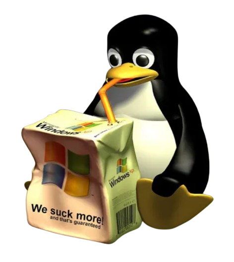

I didn't switch to Linux because Windows is completely unusable. It works fine for everyday tasks like browsing, schoolwork, and gaming. But over time, I started noticing it was heavy on system resources, especially RAM, even when I wasn't doing much.
Linux stood out because it gives more control and transparency. Instead of hiding how the system works, it shows you what's happening underneath. That might seem intimidating at first, but it helps you actually understand your computer instead of just using it blindly.
Another thing I appreciate is the terminal. A lot of people find it scary, but it's really just another way of controlling your system — often faster and more precise than clicking through menus. Once you learn a few basic commands, tasks like installing software, updating the system, or managing files become pretty straightforward. It stops feeling like a threat and starts feeling like a shortcut.
One major advantage is how easily you can reshape the entire user experience. Linux lets you swap out your whole desktop environment — KDE, GNOME, XFCE, and others — and completely change how the system looks and behaves, from Windows-like to macOS-like to something totally custom. A few commands and it's a different machine.
